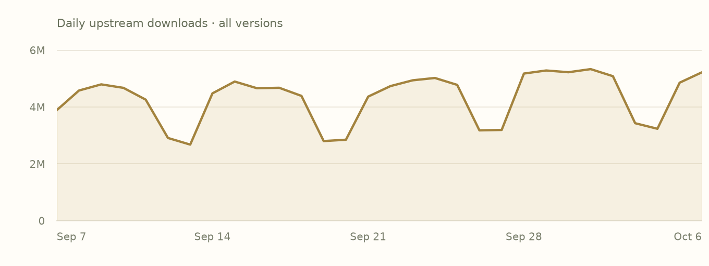

README
Recorded documentationUpstream documentation. Cargo examples describe the Rust crate; Add to project provides the Oven dependency.
README.md · Author-provided
Serde JSON Build Status Latest Version
Serde is a framework for serializing and deserializing Rust data structures efficiently and generically.
[dependencies]
serde_json = "1.0"
You may be looking for:
- JSON API documentation
- Serde API documentation
- Detailed documentation about Serde
- Setting up
#[derive(Serialize, Deserialize)] - Release notes
JSON is a ubiquitous open-standard format that uses human-readable text to transmit data objects consisting of key-value pairs.
{
"name": "John Doe",
"age": 43,
"address": {
"street": "10 Downing Street",
"city": "London"
},
"phones": [
"+44 1234567",
"+44 2345678"
]
}
There are three common ways that you might find yourself needing to work with JSON data in Rust.
- As text data. An unprocessed string of JSON data that you receive on an HTTP endpoint, read from a file, or prepare to send to a remote server.
- As an untyped or loosely typed representation. Maybe you want to check that some JSON data is valid before passing it on, but without knowing the structure of what it contains. Or you want to do very basic manipulations like insert a key in a particular spot.
- As a strongly typed Rust data structure. When you expect all or most of your data to conform to a particular structure and want to get real work done without JSON's loosey-goosey nature tripping you up.
Serde JSON provides efficient, flexible, safe ways of converting data between each of these representations.
Operating on untyped JSON values
Any valid JSON data can be manipulated in the following recursive enum
representation. This data structure is serde_json::Value.
enum Value {
Null,
Bool(bool),
Number(Number),
String(String),
Array(Vec<Value>),
Object(Map<String, Value>),
}
A string of JSON data can be parsed into a serde_json::Value by the
serde_json::from_str function. There is also
from_slice for parsing from a byte slice &[u8] and
from_reader for parsing from any io::Read like a File or a
TCP stream.
<div align="right"> <a href="https://play.rust-lang.org/?edition=2018&gist=d69d8e3156d4bb81c4461b60b772ab72" target="_blank"> <img align="center" width="85" src="https://raw.githubusercontent.com/serde-rs/serde-rs.github.io/master/img/runtab.png"> </a> </div>
use serde_json::{Result, Value};
fn untyped_example() -> Result<()> {
// Some JSON input data as a &str. Maybe this comes from the user.
let data = r#"
{
"name": "John Doe",
"age": 43,
"phones": [
"+44 1234567",
"+44 2345678"
]
}"#;
// Parse the string of data into serde_json::Value.
let v: Value = serde_json::from_str(data)?;
// Access parts of the data by indexing with square brackets.
println!("Please call {} at the number {}", v["name"], v["phones"][0]);
Ok(())
}
The result of square bracket indexing like v["name"] is a borrow of the data
at that index, so the type is &Value. A JSON map can be indexed with string
keys, while a JSON array can be indexed with integer keys. If the type of the
data is not right for the type with which it is being indexed, or if a map does
not contain the key being indexed, or if the index into a vector is out of
bounds, the returned element is Value::Null.
When a Value is printed, it is printed as a JSON string. So in the code above,
the output looks like Please call "John Doe" at the number "+44 1234567". The
quotation marks appear because v["name"] is a &Value containing a JSON
string and its JSON representation is "John Doe". Printing as a plain string
without quotation marks involves converting from a JSON string to a Rust string
with as_str() or avoiding the use of Value as described in the following
section.
The Value representation is sufficient for very basic tasks but can be tedious
to work with for anything more significant. Error handling is verbose to
implement correctly, for example imagine trying to detect the presence of
unrecognized fields in the input data. The compiler is powerless to help you
when you make a mistake, for example imagine typoing v["name"] as v["nmae"]
in one of the dozens of places it is used in your code.
Parsing JSON as strongly typed data structures
Serde provides a powerful way of mapping JSON data into Rust data structures largely automatically.
<div align="right"> <a href="https://play.rust-lang.org/?edition=2018&gist=15cfab66d38ff8a15a9cf1d8d897ac68" target="_blank"> <img align="center" width="85" src="https://raw.githubusercontent.com/serde-rs/serde-rs.github.io/master/img/runtab.png"> </a> </div>
use serde::{Deserialize, Serialize};
use serde_json::Result;
#[derive(Serialize, Deserialize)]
struct Person {
name: String,
age: u8,
phones: Vec<String>,
}
fn typed_example() -> Result<()> {
// Some JSON input data as a &str. Maybe this comes from the user.
let data = r#"
{
"name": "John Doe",
"age": 43,
"phones": [
"+44 1234567",
"+44 2345678"
]
}"#;
// Parse the string of data into a Person object. This is exactly the
// same function as the one that produced serde_json::Value above, but
// now we are asking it for a Person as output.
let p: Person = serde_json::from_str(data)?;
// Do things just like with any other Rust data structure.
println!("Please call {} at the number {}", p.name, p.phones[0]);
Ok(())
}
This is the same serde_json::from_str function as before, but this time we
assign the return value to a variable of type Person so Serde will
automatically interpret the input data as a Person and produce informative
error messages if the layout does not conform to what a Person is expected to
look like.
Any type that implements Serde's Deserialize trait can be deserialized this
way. This includes built-in Rust standard library types like Vec<T> and
HashMap<K, V>, as well as any structs or enums annotated with
#[derive(Deserialize)].
Once we have p of type Person, our IDE and the Rust compiler can help us use
it correctly like they do for any other Rust code. The IDE can autocomplete
field names to prevent typos, which was impossible in the serde_json::Value
representation. And the Rust compiler can check that when we write
p.phones[0], then p.phones is guaranteed to be a Vec<String> so indexing
into it makes sense and produces a String.
The necessary setup for using Serde's derive macros is explained on the Using derive page of the Serde site.
Constructing JSON values
Serde JSON provides a json! macro to build serde_json::Value
objects with very natural JSON syntax.
<div align="right"> <a href="https://play.rust-lang.org/?edition=2018&gist=6ccafad431d72b62e77cc34c8e879b24" target="_blank"> <img align="center" width="85" src="https://raw.githubusercontent.com/serde-rs/serde-rs.github.io/master/img/runtab.png"> </a> </div>
use serde_json::json;
fn main() {
// The type of `john` is `serde_json::Value`
let john = json!({
"name": "John Doe",
"age": 43,
"phones": [
"+44 1234567",
"+44 2345678"
]
});
println!("first phone number: {}", john["phones"][0]);
// Convert to a string of JSON and print it out
println!("{}", john.to_string());
}
The Value::to_string() function converts a serde_json::Value into a String
of JSON text.
One neat thing about the json! macro is that variables and expressions can be
interpolated directly into the JSON value as you are building it. Serde will
check at compile time that the value you are interpolating is able to be
represented as JSON.
<div align="right"> <a href="https://play.rust-lang.org/?edition=2018&gist=f9101a6e61dfc9e02c6a67f315ed24f2" target="_blank"> <img align="center" width="85" src="https://raw.githubusercontent.com/serde-rs/serde-rs.github.io/master/img/runtab.png"> </a> </div>
let full_name = "John Doe";
let age_last_year = 42;
// The type of `john` is `serde_json::Value`
let john = json!({
"name": full_name,
"age": age_last_year + 1,
"phones": [
format!("+44 {}", random_phone())
]
});
This is amazingly convenient, but we have the problem we had before with
Value: the IDE and Rust compiler cannot help us if we get it wrong. Serde JSON
provides a better way of serializing strongly-typed data structures into JSON
text.
Creating JSON by serializing data structures
A data structure can be converted to a JSON string by
serde_json::to_string. There is also
serde_json::to_vec which serializes to a Vec<u8> and
serde_json::to_writer which serializes to any io::Write
such as a File or a TCP stream.
<div align="right"> <a href="https://play.rust-lang.org/?edition=2018&gist=3472242a08ed2ff88a944f2a2283b0ee" target="_blank"> <img align="center" width="85" src="https://raw.githubusercontent.com/serde-rs/serde-rs.github.io/master/img/runtab.png"> </a> </div>
use serde::{Deserialize, Serialize};
use serde_json::Result;
#[derive(Serialize, Deserialize)]
struct Address {
street: String,
city: String,
}
fn print_an_address() -> Result<()> {
// Some data structure.
let address = Address {
street: "10 Downing Street".to_owned(),
city: "London".to_owned(),
};
// Serialize it to a JSON string.
let j = serde_json::to_string(&address)?;
// Print, write to a file, or send to an HTTP server.
println!("{}", j);
Ok(())
}
Any type that implements Serde's Serialize trait can be serialized this way.
This includes built-in Rust standard library types like Vec<T> and HashMap<K, V>, as well as any structs or enums annotated with #[derive(Serialize)].
Performance
It is fast. You should expect in the ballpark of 500 to 1000 megabytes per second deserialization and 600 to 900 megabytes per second serialization, depending on the characteristics of your data. This is competitive with the fastest C and C++ JSON libraries or even 30% faster for many use cases. Benchmarks live in the serde-rs/json-benchmark repo.
Getting help
Serde is one of the most widely used Rust libraries, so any place that Rustaceans congregate will be able to help you out. For chat, consider trying the #rust-questions or #rust-beginners channels of the unofficial community Discord (invite: https://discord.gg/rust-lang-community), the #rust-usage or #beginners channels of the official Rust Project Discord (invite: https://discord.gg/rust-lang), or the #general stream in Zulip. For asynchronous, consider the [rust] tag on StackOverflow, the /r/rust subreddit which has a pinned weekly easy questions post, or the Rust Discourse forum. It's acceptable to file a support issue in this repo, but they tend not to get as many eyes as any of the above and may get closed without a response after some time.
No-std support
As long as there is a memory allocator, it is possible to use serde_json without the rest of the Rust standard library. Disable the default "std" feature and enable the "alloc" feature:
[dependencies]
serde_json = { version = "1.0", default-features = false, features = ["alloc"] }
For JSON support in Serde without a memory allocator, please see the
serde-json-core crate.
<br>
License
<sup> Licensed under either of <a href="LICENSE-APACHE">Apache License, Version 2.0</a> or <a href="LICENSE-MIT">MIT license</a> at your option. </sup>
<br>
<sub> Unless you explicitly state otherwise, any contribution intentionally submitted for inclusion in this crate by you, as defined in the Apache-2.0 license, shall be dual licensed as above, without any additional terms or conditions. </sub>
Features
Declared activationDefault activation follows the complete local feature graph. Forwarded edges remain declarations, not a resolved build.
| Feature | Default | Activation edges |
|---|---|---|
alloc | No |
|
arbitrary_precision | No |
|
default | Yesdefault |
|
float_roundtrip | No |
|
indexmap | No |
|
preserve_order | No |
|
raw_value | No |
|
std | Yesdefault → std |
|
unbounded_depth | No |
|
Dependencies
Version requirementsVersion requirements are declarations, not resolved versions. Target conditions apply to each declaration individually.
| Dependency | Requirement & features | Activation |
|---|---|---|
crates-io/indexmapAlias: indexmap | ^2.2.3Default features: enabledRequests: | Optional · not enabled by defaults |
crates-io/itoaAlias: itoa | ^1.0Default features: enabledRequests: | Required |
crates-io/memchrAlias: memchr | ^2Default features: disabledRequests: | Required |
crates-io/serdeAlias: serde | ^1.0.220Default features: disabledRequests: | Required · when cfg(any()) |
crates-io/serde_coreAlias: serde_core | ^1.0.220Default features: disabledRequests: | Required |
crates-io/zmijAlias: zmij | ^1.0Default features: enabledRequests: | Required |
Dependents
Whole indexDirect declarations from all indexed versions. Requirements and target/feature conditions may select a different version than the one shown here.
- crates-io/arrow-json 60.0.0Requires ^1.0 · alias serde_json ·
- crates-io/arrow-json 58.4.0Requires ^1.0 · alias serde_json ·
- crates-io/arrow-schema 60.0.0Requires ^1.0 · alias serde_json ·
- crates-io/arrow-schema 58.4.0Requires ^1.0 · alias serde_json ·
- crates-io/assert-json-diff 2.0.2Requires ^1 · alias serde_json ·
- crates-io/auditable-serde 0.9.0Requires ^1.0.57 · alias serde_json ·
- crates-io/auditable-serde 0.8.0Requires ^1.0.57 · alias serde_json ·
- crates-io/av-scenechange 0.14.1Requires ^1.0.62 · alias serde_json ·
- crates-io/aws-smithy-http-client 1.5.0Requires ^1.0.146 · alias serde_json ·
- crates-io/axum 0.8.9Requires ^1.0 · alias serde_json ·
- crates-io/axum 0.8.8Requires ^1.0 · alias serde_json ·
- crates-io/bigdecimal 0.4.11Requires ^1.0 · alias serde_json ·
- crates-io/cargo_metadata 0.23.1Requires ^1.0.142 · alias serde_json ·
- crates-io/cookie_store 0.22.1Requires ^1.0.87 · alias serde_json ·
- crates-io/criterion 0.8.2Requires ^1.0.100 · alias serde_json ·
- crates-io/datafusion-datasource-json 53.1.0Requires ^1 · alias serde_json ·
- crates-io/datafusion-expr 53.1.0Requires ^1 · alias serde_json ·
- crates-io/elliptic-curve 0.13.8Requires ^1.0.47 · alias serde_json ·
- crates-io/fxprof-processed-profile 0.6.0Requires ^1.0 · alias serde_json ·
- crates-io/icu_provider 2.3.1Requires ^1.0.45 · alias serde_json ·
- crates-io/icu_provider 2.1.1Requires ^1.0.45 · alias serde_json ·
- crates-io/json-patch 4.2.0Requires ^1.0.95 · alias serde_json ·
- crates-io/jsonpath-rust 1.0.11Requires ^1.0 · alias serde_json ·
- crates-io/jsonptr 0.8.2Requires ^1.0.140 · alias serde_json ·
- crates-io/jsonptr 0.7.1Requires ^1.0.119 · alias serde_json ·
- crates-io/jsonschema 0.58.6Requires ^1 · alias serde_json ·
- crates-io/jsonschema-value 0.58.6Requires ^1 · alias serde_json ·
- crates-io/jsonwebtoken 11.1.0Requires ^1.0 · alias serde_json ·
- crates-io/k8s-openapi 0.28.0Requires ^1 · alias serde_json ·
- crates-io/kube-client 4.2.0Requires ^1.0.127 · alias serde_json ·
- crates-io/kube-core 4.2.0Requires ^1.0.127 · alias serde_json ·
- crates-io/multer 3.1.0Requires ^1.0 · alias serde_json ·
- crates-io/object_store 0.14.2Requires ^1.0 · alias serde_json ·
- crates-io/object_store 0.13.2Requires ^1.0 · alias serde_json ·
- crates-io/opentelemetry-otlp 0.33.0Requires ^1.0 · alias serde_json ·
- crates-io/opentelemetry_sdk 0.33.0Requires ^1.0 · alias serde_json ·
- crates-io/parquet 58.4.0Requires ^1.0 · alias serde_json ·
- crates-io/pest 2.9.2Requires ^1.0.85 · alias serde_json ·
- crates-io/postgres-types 0.2.14Requires ^1.0.144 · alias serde_json-1 ·
- crates-io/ra_ap_hir 0.0.325Requires ^1.0.140 · alias serde_json ·
- crates-io/ra_ap_proc_macro_api 0.0.325Requires ^1.0.140 · alias serde_json ·
- crates-io/ra_ap_project_model 0.0.325Requires ^1.0.140 · alias serde_json ·
- crates-io/raw-cpuid 11.6.0Requires ^1.0 · alias serde_json ·
- crates-io/redis 1.7.1Requires ^1.0.149 · alias serde_json ·
- crates-io/referencing 0.58.6Requires ^1 · alias serde_json ·
- crates-io/reqwest 0.13.5Requires ^1.0 · alias serde_json ·
- crates-io/rusqlite 0.40.2Requires ^1.0 · alias serde_json ·
- crates-io/rust_decimal 1.43.0Requires ^1.0 · alias serde_json ·
- crates-io/schemars 1.2.2Requires ^1.0.127 · alias serde_json ·
- crates-io/schemars 0.8.22Requires ^1.0.25 · alias serde_json ·
- crates-io/serde_with 3.24.0Requires ^1.0.151 · alias serde_json ·
- crates-io/siphasher 1.0.4Requires ^1.0 · alias serde_json ·
- crates-io/sqlparser 0.61.0Requires ^1.0 · alias serde_json ·
- crates-io/sqlx-core 0.9.0Requires ^1.0.142 · alias serde_json ·
- crates-io/sqlx-macros-core 0.9.0Requires ^1.0.142 · alias serde_json ·
- crates-io/sqlx-postgres 0.9.0Requires ^1.0.142 · alias serde_json ·
- crates-io/substrait 0.63.0Requires ^1.0.145 · alias serde_json ·
- crates-io/substrait 0.62.2Requires ^1.0.145 · alias serde_json ·
- crates-io/tinytemplate 1.2.1Requires ^1.0 · alias serde_json ·
- crates-io/tracing-subscriber 0.3.23Requires ^1.0.82 · alias serde_json ·
- crates-io/typewit 1.15.2Requires ^1.0 · alias serde_json ·
- crates-io/typify-impl 0.5.0Requires ^1.0.145 · alias serde_json ·
- crates-io/typify-macro 0.5.0Requires ^1.0.145 · alias serde_json ·
- crates-io/ureq 3.4.2Requires ^1.0.120 · alias serde_json ·
- crates-io/wasm-bindgen 0.2.129Requires ^1.0 · alias serde_json ·
- crates-io/wasm-metadata 0.261.0Requires ^1 · alias serde_json ·
- crates-io/wasm-metadata 0.259.0Requires ^1 · alias serde_json ·
- crates-io/wasm-metadata 0.247.0Requires ^1 · alias serde_json ·
- crates-io/wasm-metadata 0.244.0Requires ^1 · alias serde_json ·
- crates-io/wasmtime 36.0.17Requires ^1.0.80 · alias serde_json ·
- crates-io/wiremock 0.6.5Requires ^1 · alias serde_json ·
- crates-io/wit-component 0.261.0Requires ^1 · alias serde_json ·
- crates-io/wit-component 0.259.0Requires ^1 · alias serde_json ·
- crates-io/wit-component 0.247.0Requires ^1 · alias serde_json ·
- crates-io/wit-component 0.244.0Requires ^1 · alias serde_json ·
- crates-io/wit-parser 0.261.0Requires ^1 · alias serde_json ·
- crates-io/wit-parser 0.259.0Requires ^1 · alias serde_json ·
- crates-io/wit-parser 0.247.0Requires ^1 · alias serde_json ·
- crates-io/wit-parser 0.244.0Requires ^1 · alias serde_json ·
- crates-io/wit-parser 0.236.1Requires ^1 · alias serde_json ·
Indexed builds
Bound assetsExact indexed bindings; units retain their individual identities. Attestation links are registry references, not an independent signature verification by this site.
| Target / profile | Toolchain / features | Evidence |
|---|---|---|
aarch64-apple-darwindebug | rustc 1.98.0 (88d9e12ae 2026-08-18)alloc | Inspect units
|
aarch64-apple-darwindebug | rustc 1.98.0 (88d9e12ae 2026-08-18)alloc, default, std | Inspect units
|
aarch64-apple-darwindebug | rustc 1.98.0 (88d9e12ae 2026-08-18)alloc, std | Inspect units
|
aarch64-apple-darwindebug | rustc 1.98.0 (88d9e12ae 2026-08-18)default, raw_value, std | Inspect units
|
aarch64-apple-darwindebug | rustc 1.98.0 (88d9e12ae 2026-08-18)default, std | Inspect units
|
aarch64-apple-darwindebug | rustc 1.98.0 (88d9e12ae 2026-08-18)default, std, unbounded_depth | Inspect units
|
aarch64-apple-darwindebug | rustc 1.98.0 (88d9e12ae 2026-08-18)std | Inspect units
|
aarch64-apple-darwinrelease | rustc 1.98.0 (88d9e12ae 2026-08-18)alloc | Inspect units
|
aarch64-apple-darwinrelease | rustc 1.98.0 (88d9e12ae 2026-08-18)alloc, default, std | Inspect units
|
aarch64-apple-darwinrelease | rustc 1.98.0 (88d9e12ae 2026-08-18)alloc, std | Inspect units
|
aarch64-apple-darwinrelease | rustc 1.98.0 (88d9e12ae 2026-08-18)default, raw_value, std | Inspect units
|
aarch64-apple-darwinrelease | rustc 1.98.0 (88d9e12ae 2026-08-18)default, std | Inspect units
|
aarch64-apple-darwinrelease | rustc 1.98.0 (88d9e12ae 2026-08-18)default, std, unbounded_depth | Inspect units
|
aarch64-apple-darwinrelease | rustc 1.98.0 (88d9e12ae 2026-08-18)std | Inspect units
|
x86_64-unknown-linux-gnudebug | rustc 1.98.0 (88d9e12ae 2026-08-18)alloc | Inspect units
|
x86_64-unknown-linux-gnudebug | rustc 1.98.0 (88d9e12ae 2026-08-18)alloc, default, std | Inspect units
|
x86_64-unknown-linux-gnudebug | rustc 1.98.0 (88d9e12ae 2026-08-18)alloc, std | Inspect units
|
x86_64-unknown-linux-gnudebug | rustc 1.98.0 (88d9e12ae 2026-08-18)default, raw_value, std | Inspect units
|
x86_64-unknown-linux-gnudebug | rustc 1.98.0 (88d9e12ae 2026-08-18)default, std | Inspect units
|
x86_64-unknown-linux-gnudebug | rustc 1.98.0 (88d9e12ae 2026-08-18)default, std, unbounded_depth | Inspect units
|
x86_64-unknown-linux-gnudebug | rustc 1.98.0 (88d9e12ae 2026-08-18)std | Inspect units
|
x86_64-unknown-linux-gnurelease | rustc 1.98.0 (88d9e12ae 2026-08-18)alloc | Inspect units
|
x86_64-unknown-linux-gnurelease | rustc 1.98.0 (88d9e12ae 2026-08-18)alloc, default, std | Inspect units
|
x86_64-unknown-linux-gnurelease | rustc 1.98.0 (88d9e12ae 2026-08-18)alloc, std | Inspect units
|
x86_64-unknown-linux-gnurelease | rustc 1.98.0 (88d9e12ae 2026-08-18)default, raw_value, std | Inspect units
|
x86_64-unknown-linux-gnurelease | rustc 1.98.0 (88d9e12ae 2026-08-18)default, std | Inspect units
|
x86_64-unknown-linux-gnurelease | rustc 1.98.0 (88d9e12ae 2026-08-18)default, std, unbounded_depth | Inspect units
|
x86_64-unknown-linux-gnurelease | rustc 1.98.0 (88d9e12ae 2026-08-18)std | Inspect units
|
Recorded build-fact bindings
| Target | Profile | Status | Features |
|---|---|---|---|
| aarch64-apple-darwin | debug | harvested | alloc |
| aarch64-apple-darwin | debug | harvested | alloc, default, std |
| aarch64-apple-darwin | debug | harvested | alloc, std |
| aarch64-apple-darwin | debug | harvested | default, float_roundtrip, std |
| aarch64-apple-darwin | debug | harvested | default, raw_value, std |
| aarch64-apple-darwin | debug | harvested | default, raw_value, std, unbounded_depth |
| aarch64-apple-darwin | debug | harvested | default, std |
| aarch64-apple-darwin | debug | harvested | default, std, unbounded_depth |
| aarch64-apple-darwin | debug | harvested | std |
| aarch64-apple-darwin | release | harvested | alloc |
| aarch64-apple-darwin | release | harvested | alloc, default, std |
| aarch64-apple-darwin | release | harvested | alloc, std |
| aarch64-apple-darwin | release | harvested | default, float_roundtrip, std |
| aarch64-apple-darwin | release | harvested | default, indexmap, preserve_order, std |
| aarch64-apple-darwin | release | harvested | default, raw_value, std |
| aarch64-apple-darwin | release | harvested | default, std |
| aarch64-apple-darwin | release | harvested | default, std, unbounded_depth |
| aarch64-apple-darwin | release | harvested | std |
| wasm32-wasip1 | debug | harvested | default, raw_value, std |
| x86_64-unknown-linux-gnu | debug | harvested | alloc |
| x86_64-unknown-linux-gnu | debug | harvested | alloc, default, std |
| x86_64-unknown-linux-gnu | debug | harvested | alloc, std |
| x86_64-unknown-linux-gnu | debug | harvested | default, float_roundtrip, std |
| x86_64-unknown-linux-gnu | debug | harvested | default, raw_value, std |
| x86_64-unknown-linux-gnu | debug | harvested | default, std |
| x86_64-unknown-linux-gnu | debug | harvested | default, std, unbounded_depth |
| x86_64-unknown-linux-gnu | debug | harvested | std |
| x86_64-unknown-linux-gnu | release | harvested | alloc |
| x86_64-unknown-linux-gnu | release | harvested | alloc, default, std |
| x86_64-unknown-linux-gnu | release | harvested | alloc, std |
| x86_64-unknown-linux-gnu | release | harvested | default, float_roundtrip, std |
| x86_64-unknown-linux-gnu | release | harvested | default, raw_value, std |
| x86_64-unknown-linux-gnu | release | harvested | default, std |
| x86_64-unknown-linux-gnu | release | harvested | default, std, unbounded_depth |
| x86_64-unknown-linux-gnu | release | harvested | std |
Versions & release notes
Indexed versionsDates below record adoption into the registry, not upstream publication. Changelogs are shown as packaged; they can cover multiple releases.
| Version | Adopted | Upstream |
|---|---|---|
| 1.0.151 | 2026-10-06 | Upstream record |
| 1.0.149 | 2026-10-06 | Upstream record |
No changelog document is recorded for this version.
License documents
Recorded filesDeclared license: MIT OR Apache-2.0
LICENSE-APACHE · Author-provided
Apache License
Version 2.0, January 2004
http://www.apache.org/licenses/
TERMS AND CONDITIONS FOR USE, REPRODUCTION, AND DISTRIBUTION
1. Definitions.
"License" shall mean the terms and conditions for use, reproduction,
and distribution as defined by Sections 1 through 9 of this document.
"Licensor" shall mean the copyright owner or entity authorized by
the copyright owner that is granting the License.
"Legal Entity" shall mean the union of the acting entity and all
other entities that control, are controlled by, or are under common
control with that entity. For the purposes of this definition,
"control" means (i) the power, direct or indirect, to cause the
direction or management of such entity, whether by contract or
otherwise, or (ii) ownership of fifty percent (50%) or more of the
outstanding shares, or (iii) beneficial ownership of such entity.
"You" (or "Your") shall mean an individual or Legal Entity
exercising permissions granted by this License.
"Source" form shall mean the preferred form for making modifications,
including but not limited to software source code, documentation
source, and configuration files.
"Object" form shall mean any form resulting from mechanical
transformation or translation of a Source form, including but
not limited to compiled object code, generated documentation,
and conversions to other media types.
"Work" shall mean the work of authorship, whether in Source or
Object form, made available under the License, as indicated by a
copyright notice that is included in or attached to the work
(an example is provided in the Appendix below).
"Derivative Works" shall mean any work, whether in Source or Object
form, that is based on (or derived from) the Work and for which the
editorial revisions, annotations, elaborations, or other modifications
represent, as a whole, an original work of authorship. For the purposes
of this License, Derivative Works shall not include works that remain
separable from, or merely link (or bind by name) to the interfaces of,
the Work and Derivative Works thereof.
"Contribution" shall mean any work of authorship, including
the original version of the Work and any modifications or additions
to that Work or Derivative Works thereof, that is intentionally
submitted to Licensor for inclusion in the Work by the copyright owner
or by an individual or Legal Entity authorized to submit on behalf of
the copyright owner. For the purposes of this definition, "submitted"
means any form of electronic, verbal, or written communication sent
to the Licensor or its representatives, including but not limited to
communication on electronic mailing lists, source code control systems,
and issue tracking systems that are managed by, or on behalf of, the
Licensor for the purpose of discussing and improving the Work, but
excluding communication that is conspicuously marked or otherwise
designated in writing by the copyright owner as "Not a Contribution."
"Contributor" shall mean Licensor and any individual or Legal Entity
on behalf of whom a Contribution has been received by Licensor and
subsequently incorporated within the Work.
2. Grant of Copyright License. Subject to the terms and conditions of
this License, each Contributor hereby grants to You a perpetual,
worldwide, non-exclusive, no-charge, royalty-free, irrevocable
copyright license to reproduce, prepare Derivative Works of,
publicly display, publicly perform, sublicense, and distribute the
Work and such Derivative Works in Source or Object form.
3. Grant of Patent License. Subject to the terms and conditions of
this License, each Contributor hereby grants to You a perpetual,
worldwide, non-exclusive, no-charge, royalty-free, irrevocable
(except as stated in this section) patent license to make, have made,
use, offer to sell, sell, import, and otherwise transfer the Work,
where such license applies only to those patent claims licensable
by such Contributor that are necessarily infringed by their
Contribution(s) alone or by combination of their Contribution(s)
with the Work to which such Contribution(s) was submitted. If You
institute patent litigation against any entity (including a
cross-claim or counterclaim in a lawsuit) alleging that the Work
or a Contribution incorporated within the Work constitutes direct
or contributory patent infringement, then any patent licenses
granted to You under this License for that Work shall terminate
as of the date such litigation is filed.
4. Redistribution. You may reproduce and distribute copies of the
Work or Derivative Works thereof in any medium, with or without
modifications, and in Source or Object form, provided that You
meet the following conditions:
(a) You must give any other recipients of the Work or
Derivative Works a copy of this License; and
(b) You must cause any modified files to carry prominent notices
stating that You changed the files; and
(c) You must retain, in the Source form of any Derivative Works
that You distribute, all copyright, patent, trademark, and
attribution notices from the Source form of the Work,
excluding those notices that do not pertain to any part of
the Derivative Works; and
(d) If the Work includes a "NOTICE" text file as part of its
distribution, then any Derivative Works that You distribute must
include a readable copy of the attribution notices contained
within such NOTICE file, excluding those notices that do not
pertain to any part of the Derivative Works, in at least one
of the following places: within a NOTICE text file distributed
as part of the Derivative Works; within the Source form or
documentation, if provided along with the Derivative Works; or,
within a display generated by the Derivative Works, if and
wherever such third-party notices normally appear. The contents
of the NOTICE file are for informational purposes only and
do not modify the License. You may add Your own attribution
notices within Derivative Works that You distribute, alongside
or as an addendum to the NOTICE text from the Work, provided
that such additional attribution notices cannot be construed
as modifying the License.
You may add Your own copyright statement to Your modifications and
may provide additional or different license terms and conditions
for use, reproduction, or distribution of Your modifications, or
for any such Derivative Works as a whole, provided Your use,
reproduction, and distribution of the Work otherwise complies with
the conditions stated in this License.
5. Submission of Contributions. Unless You explicitly state otherwise,
any Contribution intentionally submitted for inclusion in the Work
by You to the Licensor shall be under the terms and conditions of
this License, without any additional terms or conditions.
Notwithstanding the above, nothing herein shall supersede or modify
the terms of any separate license agreement you may have executed
with Licensor regarding such Contributions.
6. Trademarks. This License does not grant permission to use the trade
names, trademarks, service marks, or product names of the Licensor,
except as required for reasonable and customary use in describing the
origin of the Work and reproducing the content of the NOTICE file.
7. Disclaimer of Warranty. Unless required by applicable law or
agreed to in writing, Licensor provides the Work (and each
Contributor provides its Contributions) on an "AS IS" BASIS,
WITHOUT WARRANTIES OR CONDITIONS OF ANY KIND, either express or
implied, including, without limitation, any warranties or conditions
of TITLE, NON-INFRINGEMENT, MERCHANTABILITY, or FITNESS FOR A
PARTICULAR PURPOSE. You are solely responsible for determining the
appropriateness of using or redistributing the Work and assume any
risks associated with Your exercise of permissions under this License.
8. Limitation of Liability. In no event and under no legal theory,
whether in tort (including negligence), contract, or otherwise,
unless required by applicable law (such as deliberate and grossly
negligent acts) or agreed to in writing, shall any Contributor be
liable to You for damages, including any direct, indirect, special,
incidental, or consequential damages of any character arising as a
result of this License or out of the use or inability to use the
Work (including but not limited to damages for loss of goodwill,
work stoppage, computer failure or malfunction, or any and all
other commercial damages or losses), even if such Contributor
has been advised of the possibility of such damages.
9. Accepting Warranty or Additional Liability. While redistributing
the Work or Derivative Works thereof, You may choose to offer,
and charge a fee for, acceptance of support, warranty, indemnity,
or other liability obligations and/or rights consistent with this
License. However, in accepting such obligations, You may act only
on Your own behalf and on Your sole responsibility, not on behalf
of any other Contributor, and only if You agree to indemnify,
defend, and hold each Contributor harmless for any liability
incurred by, or claims asserted against, such Contributor by reason
of your accepting any such warranty or additional liability.
END OF TERMS AND CONDITIONS
sha256:62c7a1e35f56406896d7aa7ca52d0cc0d272ac022b5d2796e7d6905db8a3636a
LICENSE-MIT · Author-provided
Permission is hereby granted, free of charge, to any
person obtaining a copy of this software and associated
documentation files (the "Software"), to deal in the
Software without restriction, including without
limitation the rights to use, copy, modify, merge,
publish, distribute, sublicense, and/or sell copies of
the Software, and to permit persons to whom the Software
is furnished to do so, subject to the following
conditions:
The above copyright notice and this permission notice
shall be included in all copies or substantial portions
of the Software.
THE SOFTWARE IS PROVIDED "AS IS", WITHOUT WARRANTY OF
ANY KIND, EXPRESS OR IMPLIED, INCLUDING BUT NOT LIMITED
TO THE WARRANTIES OF MERCHANTABILITY, FITNESS FOR A
PARTICULAR PURPOSE AND NONINFRINGEMENT. IN NO EVENT
SHALL THE AUTHORS OR COPYRIGHT HOLDERS BE LIABLE FOR ANY
CLAIM, DAMAGES OR OTHER LIABILITY, WHETHER IN AN ACTION
OF CONTRACT, TORT OR OTHERWISE, ARISING FROM, OUT OF OR
IN CONNECTION WITH THE SOFTWARE OR THE USE OR OTHER
DEALINGS IN THE SOFTWARE.
sha256:23f18e03dc49df91622fe2a76176497404e46ced8a715d9d2b67a7446571cca3
Popularity
Separate observationsHistorical observations across all versions, not unique users or installs. Statistics refresh independently of the index.
Daily values · crates.io · upstream
| UTC date | Downloads |
|---|---|
| 2026-09-07 | 3888619 |
| 2026-09-08 | 4580434 |
| 2026-09-09 | 4797328 |
| 2026-09-10 | 4674571 |
| 2026-09-11 | 4260094 |
| 2026-09-12 | 2912477 |
| 2026-09-13 | 2678925 |
| 2026-09-14 | 4481182 |
| 2026-09-15 | 4896555 |
| 2026-09-16 | 4661672 |
| 2026-09-17 | 4677439 |
| 2026-09-18 | 4392078 |
| 2026-09-19 | 2803409 |
| 2026-09-20 | 2850656 |
| 2026-09-21 | 4366852 |
| 2026-09-22 | 4736767 |
| 2026-09-23 | 4940260 |
| 2026-09-24 | 5022126 |
| 2026-09-25 | 4779393 |
| 2026-09-26 | 3179699 |
| 2026-09-27 | 3194870 |
| 2026-09-28 | 5177969 |
| 2026-09-29 | 5285707 |
| 2026-09-30 | 5224361 |
| 2026-10-01 | 5333808 |
| 2026-10-02 | 5085076 |
| 2026-10-03 | 3431349 |
| 2026-10-04 | 3236186 |
| 2026-10-05 | 4856880 |
| 2026-10-06 | 5221643 |
crates.io · upstream
12962838530 complete UTC days · all versions

Captured 2026-10-07T10:29:14.121674000Z · Source
Daily values · Incan registry · GitHub Packages
| UTC date | Downloads |
|---|---|
| 2026-09-08 | 0 |
| 2026-09-09 | 0 |
| 2026-09-10 | 0 |
| 2026-09-11 | 0 |
| 2026-09-12 | 0 |
| 2026-09-13 | 0 |
| 2026-09-14 | 0 |
| 2026-09-15 | 0 |
| 2026-09-16 | 0 |
| 2026-09-17 | 0 |
| 2026-09-18 | 0 |
| 2026-09-19 | 0 |
| 2026-09-20 | 0 |
| 2026-09-21 | 0 |
| 2026-09-22 | 0 |
| 2026-09-23 | 0 |
| 2026-09-24 | 0 |
| 2026-09-25 | 0 |
| 2026-09-26 | 0 |
| 2026-09-27 | 0 |
| 2026-09-28 | 0 |
| 2026-09-29 | 0 |
| 2026-09-30 | 0 |
| 2026-10-01 | 0 |
| 2026-10-02 | 0 |
| 2026-10-03 | 0 |
| 2026-10-04 | 0 |
| 2026-10-05 | 0 |
| 2026-10-06 | 0 |
| 2026-10-07 | 7 |
The last registry day is a partial UTC day.
Incan registry · GitHub Packages
7All-time pulls · all build tags

Captured 2026-10-07T10:29:14.121674000Z · Source
Security
CoverageYanked: No. Registry advisory records: 0.
An upstream vulnerability feed has not been collected. No advisories here does not establish that a package is free of vulnerabilities.
Provenance
Pinned evidence- Index checkpoint
- 18c77d028d27bcd9bb4f7c951834521236c93e4b
- Source Loaf
sha256:fbaa5d6302282e35f970e3e8f9e3df5af26ec2174cbb603d4ed429ad8798a379- Upstream checksum
sha256:c841b55ecdae098c80dcae9cf767f6f8a0c2cdb3416bbef72181df4d0fe73f14- Adopted by
- encero-systems/incan.pub maintainers
Recorded loaf.toml
# harvested from the release capture at b1a5c57
#
# Projection of the incan.pub event log; regenerate with `incan-pub build`, never edit.
[project]
name = "crates-io/serde_json"
version = "1.0.151"
[project.features]
alloc = ["serde_core/alloc"]
arbitrary_precision = []
default = ["std"]
float_roundtrip = []
indexmap = ["dep:indexmap"]
preserve_order = ["indexmap", "std"]
raw_value = []
std = ["memchr/std", "serde_core/std"]
unbounded_depth = []
[rust]
name = "serde_json"
type = "lib"
edition = "2021"
build-script = true
[dependencies]
indexmap = { loaf = "crates-io/indexmap", version = "^2.2.3", optional = true }
itoa = { loaf = "crates-io/itoa", version = "^1.0" }
memchr = { loaf = "crates-io/memchr", version = "^2", default-features = false }
serde = { loaf = "crates-io/serde", version = "^1.0.220", default-features = false, target = "cfg(any())" }
serde_core = { loaf = "crates-io/serde_core", version = "^1.0.220", default-features = false }
zmij = { loaf = "crates-io/zmij", version = "^1.0" }
[[rust.facts]]
toolchain = "rustc 1.98.0 (88d9e12ae 2026-08-18)"
target = "aarch64-apple-darwin"
profile = "debug"
features = ["alloc"]
cfg = ["fast_arithmetic=\"64\""]
[[rust.facts]]
toolchain = "rustc 1.98.0 (88d9e12ae 2026-08-18)"
target = "aarch64-apple-darwin"
profile = "debug"
features = ["alloc", "default", "std"]
cfg = ["fast_arithmetic=\"64\""]
[[rust.facts]]
toolchain = "rustc 1.98.0 (88d9e12ae 2026-08-18)"
target = "aarch64-apple-darwin"
profile = "debug"
features = ["alloc", "std"]
cfg = ["fast_arithmetic=\"64\""]
[[rust.facts]]
toolchain = "rustc 1.98.0 (88d9e12ae 2026-08-18)"
target = "aarch64-apple-darwin"
profile = "debug"
features = ["default", "float_roundtrip", "std"]
cfg = ["fast_arithmetic=\"64\""]
[[rust.facts]]
toolchain = "rustc 1.98.0 (88d9e12ae 2026-08-18)"
target = "aarch64-apple-darwin"
profile = "debug"
features = ["default", "raw_value", "std"]
cfg = ["fast_arithmetic=\"64\""]
[[rust.facts]]
toolchain = "rustc 1.98.0 (88d9e12ae 2026-08-18)"
target = "aarch64-apple-darwin"
profile = "debug"
features = ["default", "raw_value", "std", "unbounded_depth"]
cfg = ["fast_arithmetic=\"64\""]
[[rust.facts]]
toolchain = "rustc 1.98.0 (88d9e12ae 2026-08-18)"
target = "aarch64-apple-darwin"
profile = "debug"
features = ["default", "std"]
cfg = ["fast_arithmetic=\"64\""]
[[rust.facts]]
toolchain = "rustc 1.98.0 (88d9e12ae 2026-08-18)"
target = "aarch64-apple-darwin"
profile = "debug"
features = ["default", "std", "unbounded_depth"]
cfg = ["fast_arithmetic=\"64\""]
[[rust.facts]]
toolchain = "rustc 1.98.0 (88d9e12ae 2026-08-18)"
target = "aarch64-apple-darwin"
profile = "debug"
features = ["std"]
cfg = ["fast_arithmetic=\"64\""]
[[rust.facts]]
toolchain = "rustc 1.98.0 (88d9e12ae 2026-08-18)"
target = "aarch64-apple-darwin"
profile = "release"
features = ["alloc"]
cfg = ["fast_arithmetic=\"64\""]
[[rust.facts]]
toolchain = "rustc 1.98.0 (88d9e12ae 2026-08-18)"
target = "aarch64-apple-darwin"
profile = "release"
features = ["alloc", "default", "std"]
cfg = ["fast_arithmetic=\"64\""]
[[rust.facts]]
toolchain = "rustc 1.98.0 (88d9e12ae 2026-08-18)"
target = "aarch64-apple-darwin"
profile = "release"
features = ["alloc", "std"]
cfg = ["fast_arithmetic=\"64\""]
[[rust.facts]]
toolchain = "rustc 1.98.0 (88d9e12ae 2026-08-18)"
target = "aarch64-apple-darwin"
profile = "release"
features = ["default", "float_roundtrip", "std"]
cfg = ["fast_arithmetic=\"64\""]
[[rust.facts]]
toolchain = "rustc 1.98.0 (88d9e12ae 2026-08-18)"
target = "aarch64-apple-darwin"
profile = "release"
features = ["default", "indexmap", "preserve_order", "std"]
cfg = ["fast_arithmetic=\"64\""]
harvested-from = "sha256:c16ad44b089ea95b80a8268b1b4bea9659316cff539b72898eb9c185fceda78c"
[[rust.facts]]
toolchain = "rustc 1.98.0 (88d9e12ae 2026-08-18)"
target = "aarch64-apple-darwin"
profile = "release"
features = ["default", "raw_value", "std"]
cfg = ["fast_arithmetic=\"64\""]
[[rust.facts]]
toolchain = "rustc 1.98.0 (88d9e12ae 2026-08-18)"
target = "aarch64-apple-darwin"
profile = "release"
features = ["default", "std"]
cfg = ["fast_arithmetic=\"64\""]
harvested-from = "sha256:c16ad44b089ea95b80a8268b1b4bea9659316cff539b72898eb9c185fceda78c"
[[rust.facts]]
toolchain = "rustc 1.98.0 (88d9e12ae 2026-08-18)"
target = "aarch64-apple-darwin"
profile = "release"
features = ["default", "std", "unbounded_depth"]
cfg = ["fast_arithmetic=\"64\""]
[[rust.facts]]
toolchain = "rustc 1.98.0 (88d9e12ae 2026-08-18)"
target = "aarch64-apple-darwin"
profile = "release"
features = ["std"]
cfg = ["fast_arithmetic=\"64\""]
[[rust.facts]]
toolchain = "rustc 1.98.0 (88d9e12ae 2026-08-18)"
target = "wasm32-wasip1"
profile = "debug"
features = ["default", "raw_value", "std"]
cfg = ["fast_arithmetic=\"64\""]
[[rust.facts]]
toolchain = "rustc 1.98.0 (88d9e12ae 2026-08-18)"
target = "x86_64-unknown-linux-gnu"
profile = "debug"
features = ["alloc"]
cfg = ["fast_arithmetic=\"64\""]
[[rust.facts]]
toolchain = "rustc 1.98.0 (88d9e12ae 2026-08-18)"
target = "x86_64-unknown-linux-gnu"
profile = "debug"
features = ["alloc", "default", "std"]
cfg = ["fast_arithmetic=\"64\""]
[[rust.facts]]
toolchain = "rustc 1.98.0 (88d9e12ae 2026-08-18)"
target = "x86_64-unknown-linux-gnu"
profile = "debug"
features = ["alloc", "std"]
cfg = ["fast_arithmetic=\"64\""]
[[rust.facts]]
toolchain = "rustc 1.98.0 (88d9e12ae 2026-08-18)"
target = "x86_64-unknown-linux-gnu"
profile = "debug"
features = ["default", "float_roundtrip", "std"]
cfg = ["fast_arithmetic=\"64\""]
[[rust.facts]]
toolchain = "rustc 1.98.0 (88d9e12ae 2026-08-18)"
target = "x86_64-unknown-linux-gnu"
profile = "debug"
features = ["default", "raw_value", "std"]
cfg = ["fast_arithmetic=\"64\""]
[[rust.facts]]
toolchain = "rustc 1.98.0 (88d9e12ae 2026-08-18)"
target = "x86_64-unknown-linux-gnu"
profile = "debug"
features = ["default", "std"]
cfg = ["fast_arithmetic=\"64\""]
[[rust.facts]]
toolchain = "rustc 1.98.0 (88d9e12ae 2026-08-18)"
target = "x86_64-unknown-linux-gnu"
profile = "debug"
features = ["default", "std", "unbounded_depth"]
cfg = ["fast_arithmetic=\"64\""]
[[rust.facts]]
toolchain = "rustc 1.98.0 (88d9e12ae 2026-08-18)"
target = "x86_64-unknown-linux-gnu"
profile = "debug"
features = ["std"]
cfg = ["fast_arithmetic=\"64\""]
[[rust.facts]]
toolchain = "rustc 1.98.0 (88d9e12ae 2026-08-18)"
target = "x86_64-unknown-linux-gnu"
profile = "release"
features = ["alloc"]
cfg = ["fast_arithmetic=\"64\""]
[[rust.facts]]
toolchain = "rustc 1.98.0 (88d9e12ae 2026-08-18)"
target = "x86_64-unknown-linux-gnu"
profile = "release"
features = ["alloc", "default", "std"]
cfg = ["fast_arithmetic=\"64\""]
[[rust.facts]]
toolchain = "rustc 1.98.0 (88d9e12ae 2026-08-18)"
target = "x86_64-unknown-linux-gnu"
profile = "release"
features = ["alloc", "std"]
cfg = ["fast_arithmetic=\"64\""]
[[rust.facts]]
toolchain = "rustc 1.98.0 (88d9e12ae 2026-08-18)"
target = "x86_64-unknown-linux-gnu"
profile = "release"
features = ["default", "float_roundtrip", "std"]
cfg = ["fast_arithmetic=\"64\""]
[[rust.facts]]
toolchain = "rustc 1.98.0 (88d9e12ae 2026-08-18)"
target = "x86_64-unknown-linux-gnu"
profile = "release"
features = ["default", "raw_value", "std"]
cfg = ["fast_arithmetic=\"64\""]
[[rust.facts]]
toolchain = "rustc 1.98.0 (88d9e12ae 2026-08-18)"
target = "x86_64-unknown-linux-gnu"
profile = "release"
features = ["default", "std"]
cfg = ["fast_arithmetic=\"64\""]
[[rust.facts]]
toolchain = "rustc 1.98.0 (88d9e12ae 2026-08-18)"
target = "x86_64-unknown-linux-gnu"
profile = "release"
features = ["default", "std", "unbounded_depth"]
cfg = ["fast_arithmetic=\"64\""]
[[rust.facts]]
toolchain = "rustc 1.98.0 (88d9e12ae 2026-08-18)"
target = "x86_64-unknown-linux-gnu"
profile = "release"
features = ["std"]
cfg = ["fast_arithmetic=\"64\""]